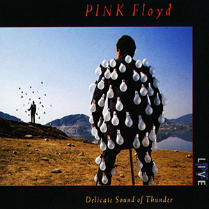
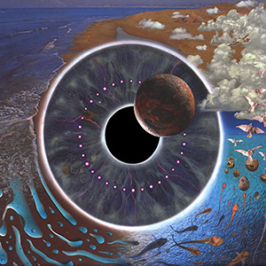
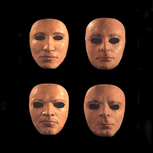

Delicate Sound of Thunder
Released 22 November 1988
| Side 1 | Side 2 | Side 3 | Side 4 |
|---|---|---|---|
| Shine On You Crazy Diamond (11:53) |
Sorrow (9:28) |
One of These Days (6:15) |
Wish You Were Here (4:49) |
| Learning to Fly (5:27) |
The Dogs of War (7:18) |
Time (5:16) |
Comfortably Numb (8:56) |
| Yet Another Movie (6:21) |
On the Turning Away (7:58) |
Money (9:52) |
Run Like Hell (7:12) |
| Round and Around (0:33) |
Another Brick in the Wall (Part 2) (5:28) |
Delicate Sound of Thunder is a double live album by the English progressive rock band Pink Floyd which was recorded over five nights at the Nassau Coliseum on Long Island, New York in August 1988 and mixed at Abbey Road Studios in September 1988. It was released on 22 November 1988, through EMI Records in the United Kingdom and Columbia Records in the United States.
P•U•L•S•E
Released 29 May 1995
| Side 1 | Side 2 | Side 3 | Side 4 |
|---|---|---|---|
| Shine On You Crazy Diamond (13:30) |
Learning To Fly (5:06) |
Hey You (4:50) |
High Hopes (7:50) |
| Astronomy Domine (5:25) |
Keep Talking (6:56) |
A Great Day For Freedom (4:20) |
Another Brick In The Wall (Part 2) (6:50) |
| What Do You Want From Me (4:10) |
Coming Back To Life (6:31) |
Sorrow (10:30) |
One Of These Days (6:51) |
| Side 5 | Side 6 | Side 7 | Side 8 |
| Speak To Me (2:28) |
The Great Gig In The Sky (5:51) |
Us And Them (7:08) |
Wish You Were Here (5:40) |
| Breathe (2:40) |
Money (8:46) |
Any Colour You Like (3:19) |
Comfortably Numb (9:10) |
| On The Run (3:41) |
Brain Damage (4:02) |
Run Like Hell (7:58) |
|
| Time (6:48) |
Eclipse (1:38) |
P•U•L•S•E is a live double album by the English progressive rock band Pink Floyd, released through EMI Records on 29 May 1995 in the United Kingdom and by Columbia Records on 6 June 1995 in the United States.
The album was recorded during the band's The Division Bell Tour in 1994, specifically the UK and European leg, which ran from July to October 1994.
The album includes a complete live version of The Dark Side of the Moon and features a booklet with many photos from performances on this tour. It also features Astronomy Domine, a Syd Barrett song not performed since the early 1970s.
Is There Anybody Out There? The Wall Live 1980-81
Released 23 March 2000
| Side 1 | Side 2 | Side 3 | Side 4 |
|---|---|---|---|
| MC: Atmos (1:13) |
Empty Spaces (2:14) |
Hey You (4:55) |
MC: Atmos (0:37) |
| In the Flesh? (3:00) |
What Shall We Do Now? (1:40) |
Is There Anybody Out There? (3:09) |
In the Flesh (4:23) |
| The Thin Ice (2:49) |
Young Lust (5:17) |
Nobody Home (3:15) |
Run Like Hell (7:05) |
| Another Brick in the Wall (Part 1) (4:13) |
One of My Turns (3:41) |
Vera (1:27) |
Waiting for the Worms (4:14) |
| The Happiest Days of Our Lives (1:40) |
Don't Leave Me Now (4:08) |
Bring the Boys Back Home (1:20) |
Stop (0:30) |
| Another Brick in the Wall (Part 2) (6:19) |
Another Brick In The Wall (Part 3) (1:15) |
Comfortably Numb (7:26) |
The Trial (6:01) |
| Mother (7:54) |
The Last Few Bricks (3:26) |
The Show Must Go On (2:35) |
Outside the Wall (4:27) |
| Goodbye Blue Sky (3:15) |
Goodbye Cruel World (1:41) |
Is There Anybody Out There? The Wall Live 1980-81 is a live album released by Pink Floyd in 2000. It is a live rendition of The Wall, produced and engineered by James Guthrie, with tracks selected from the August 1980 and June 1981 performances at Earls Court in London.
The album was first released in The Netherlands by EMI Records on 23 March 2000, who released a limited edition in the United Kingdom on 27 March. The general release followed on 18 April 2000 with US and Canadian distribution by Columbia Records.
The shows involved the construction of a wall on stage throughout the first half of the show. Once complete, members of the band performed in small openings in, atop, in front of, or even behind the wall. The album artwork featured the life-masks of the four band members in front of a black wall; the masks were worn by the "surrogate band" during the song In The Flesh. Goodbye Blue Sky and parts of Run Like Hell were taken from the 17 June 1981 show, the very last performance by the four-man Pink Floyd until the 2005 Live 8 concert. The album was re-released in February 2012 in remastered form as part of the Immersion boxset edition of The Wall.